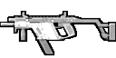

/// PERFIL DO OPERADOR
O Capitão John "Soap" MacTavish é um especialista em demolições e operações especiais do SAS britânico. Iniciou sua carreira na Bravo Team como recruta ("What the hell kind of name is Soap?"), mas rapidamente ascendeu devido à sua competência letal.
Conhecido por sua lealdade inabalável ao Capitão Price e por executar missões de alto risco ("Suicide Missions"). Foi fundamental na resolução da Crise Ultranacionalista e na caçada a Vladimir Makarov.
/// REGISTRO DE MISSÕES
OP. CREW EXPENDABLE
Estreito de Bering. Infiltração em cargueiro estoniano. Recuperação de manifesto nuclear.
OP. KINGFISH
Ucrânia. Tentativa de captura de Makarov. Soap ferido por RPG; Price capturado para garantir a fuga.
THE GULAG
Petropavlovsk, Rússia. Invasão de penitenciária de segurança máxima. Resgate do Prisioneiro #627.
HOTEL BRAVO (ENDGAME)
Afeganistão. Caçada ao General Shepherd. Alvo eliminado via faca de arremesso.
/// EQUIPAMENTO DE PREFERENCIA
